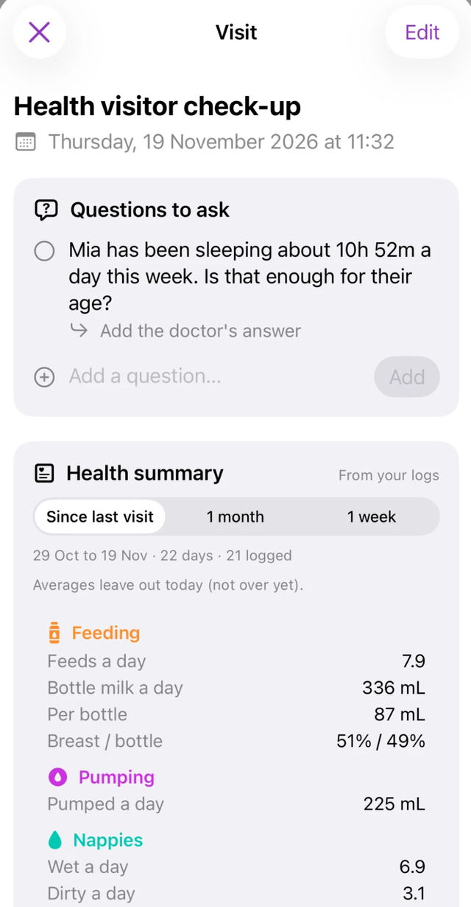

Guide
How many wet and dirty nappies should a newborn have?
Counting nappies is one of the simplest ways to tell a breastfed baby is getting enough milk. Here's what the NHS says, and an easy way to keep count when you're tired.
What the NHS says, for breastfed babies
- First 48 hoursYour baby is likely to have only 2 or 3 wet nappies.
- From day 4At least 2 soft, yellow poos the size of a £2 coin every day, for the first few weeks.
- From day 5Wet nappies become more frequent, with at least 6 heavy, wet nappies every 24 hours.
- Not sure if a disposable is wet?Add 2 to 4 tablespoons of water to an unused nappy to feel what a wet one is like.
- If you're worriedAsk for help early. Speak to your midwife, health visitor or a breastfeeding specialist.
Source: NHS, Breastfeeding: is my baby getting enough milk?

Keeping count with Tiny Logger
- Log each change in a tapChoose wet, dirty or both. Add colour and consistency if you want to, and the app flags colours worth mentioning to your doctor.
- See the day's totalHistory shows each day's wet and dirty count, so you can check against the numbers above at a glance.
- Share it at appointmentsThe health summary for a visit shows wet and dirty nappies a day since the last one.
This is not medical advice
Tiny Logger helps you keep records. It does not diagnose. If you're worried about your baby, talk to your midwife, health visitor or GP, call NHS 111, or in an emergency call 999.